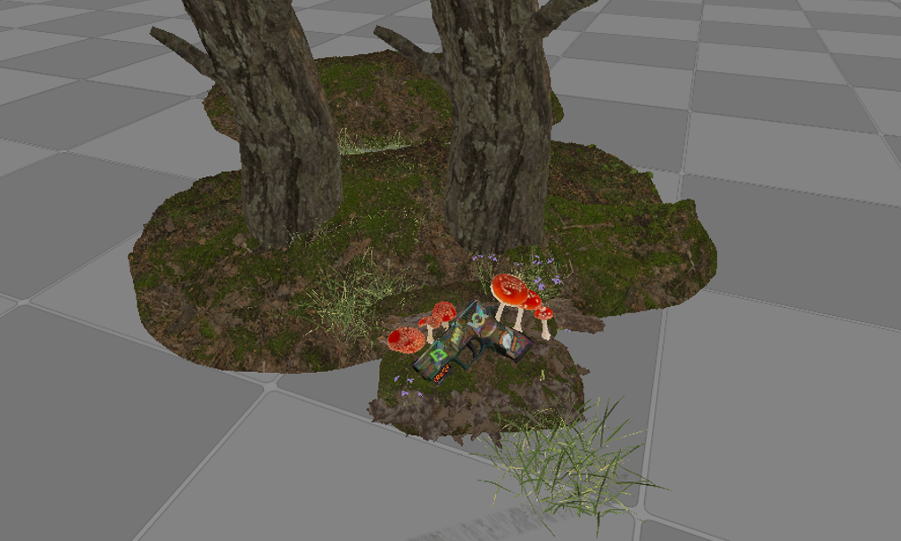
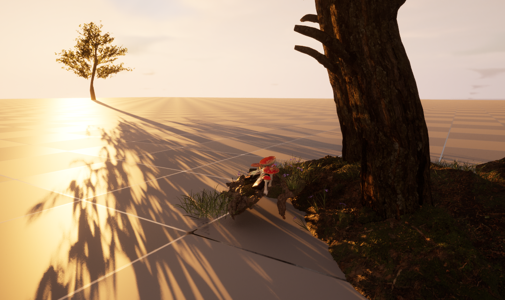
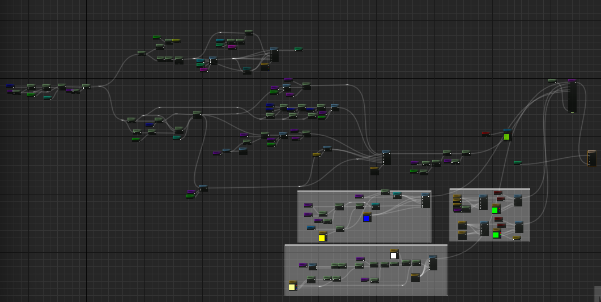
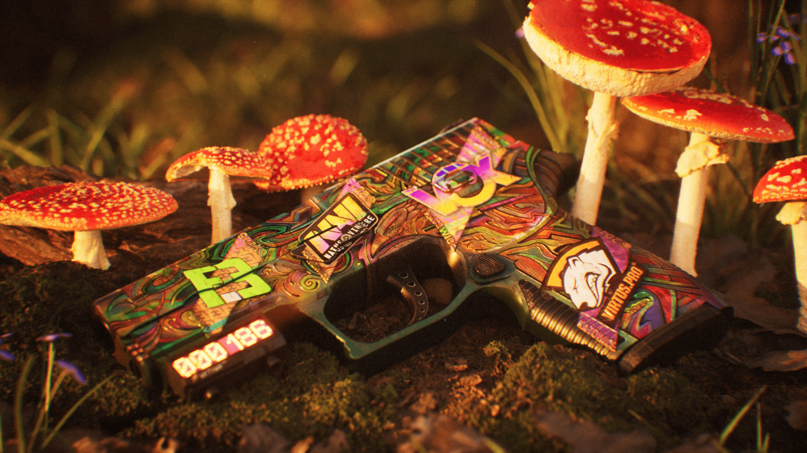

< HOME
Counter-Strike Renders
< Back
Next >
Scene
For a still render like this the only thing that matters is what's in camera. So for this scene
there is the subject close to the camera and the ground behind it gets smaller aswell as grass infront of the camera gives the illusion of a larger scene.
The ground under the gun is the same as the background, but shrunk down to make it look like very high detailed moss. Unreal's Nanite allows me to use
MegaScan assets with millions of polys while still being performant.
To make the gun look like it's been laying there for a while there is a dirt decal covering the top. This stops it looking clean and adds even more detail.
Tech Used:
• Nanite
Lighting
I wanted this scene to be in the early morning with a nice sunrise colour. To achieve this I simply set the sun to be at a low angle.
The scene lighting looked very flat so to break it up and to make it appear as if it's in a large forest I placed a tree off in the distance so it's shadow lays over the scene.
No other lighting is needed because this is an outdoor scene and anything else would feel unnatural.
Tech Used:
• Luman
• Path-Tracing
Materials
This scene uses Unreal 5.2's Substrate materials. The material for the stickers takes the extracted game files and accuratly recreates their look (Material Source).
The mushrooms use subsurface scattering to make sure they aren't flat and react with the scene lighting in a realistic way.
The weapon material uses the upscaled texture from the game with fine tuned metalic, specular, and roughness values to make it look perfect.
Tech Used:
• Substrate
• Subsurface Scattering
Post Processing
Post processing allows me to get the final images exactly how I want. I really enjoy trying to recreate an old film camera look.
To achieve this I have used chromatic aberation, bloom, lens flares, tempreture controls, and more. To really get the look I'm after I disable the denoiser and add
a film dirt mask. Without the noise and dirt the final image looks too clean.
Tech Used:
• Post Processing Volumes
• Volumetrics